Bem-vindo! Aqui você pode visualizar informações e conhecer melhor os animais disponíveis para adoção. Nosso desejo é que cada um encontre um lar cheio de cuidado, carinho e responsabilidade e uma família pronta para retribuir todo o amor que eles têm a oferecer.
O Bem-Estar Animal atua como facilitador nesse processo, auxiliando e orientando as adoções para que aconteçam de forma segura e consciente.